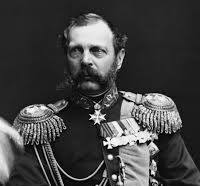
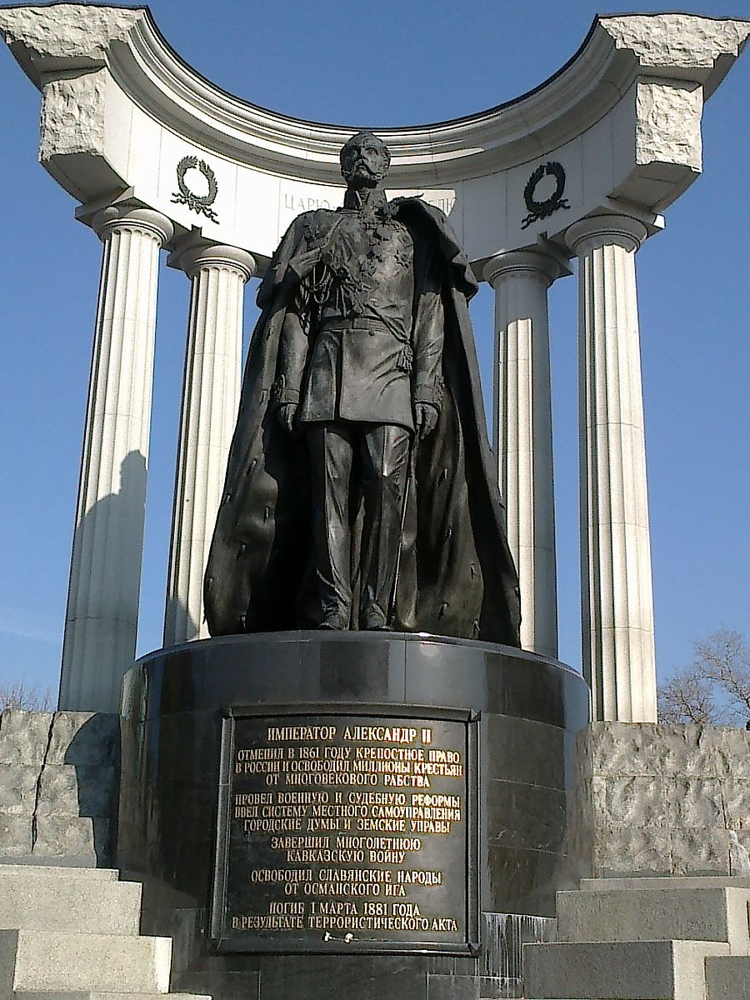
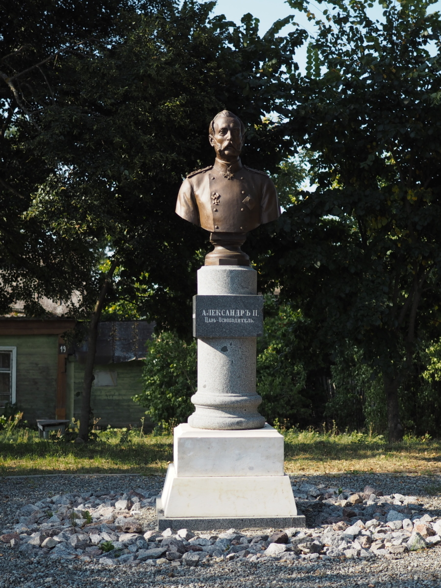

Александр II — Царь-Освободитель
Краткая биография
Александр II (1818–1881) — российский император, известный своими реформами, которые значительно изменили Российскую империю. Он вошёл в историю как «Царь-Освободитель» благодаря отмене крепостного права в 1861 году.
Реформы Александра II
- Отмена крепостного права (1861)
- Судебная реформа (1864)
- Военная реформа (1874)
- Земская и городская реформы
Интересные факты
На Александра II было совершено несколько покушений. Последнее из них, в 1881 году, стало для него роковым.
Фотографии

Портрет Александра II

Памятник Александру II

Реформы Александра II